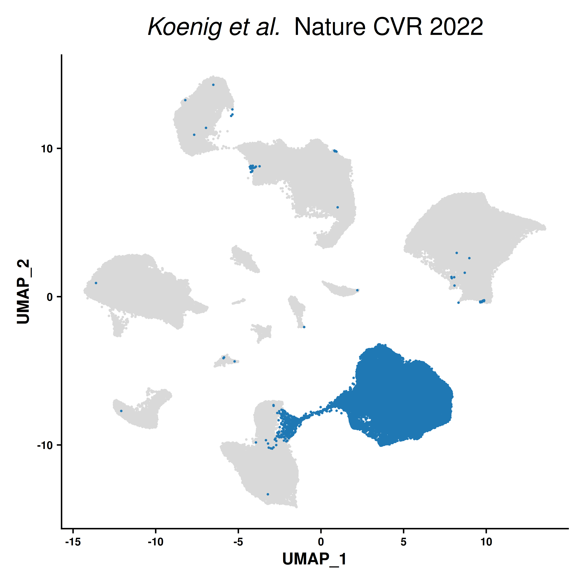
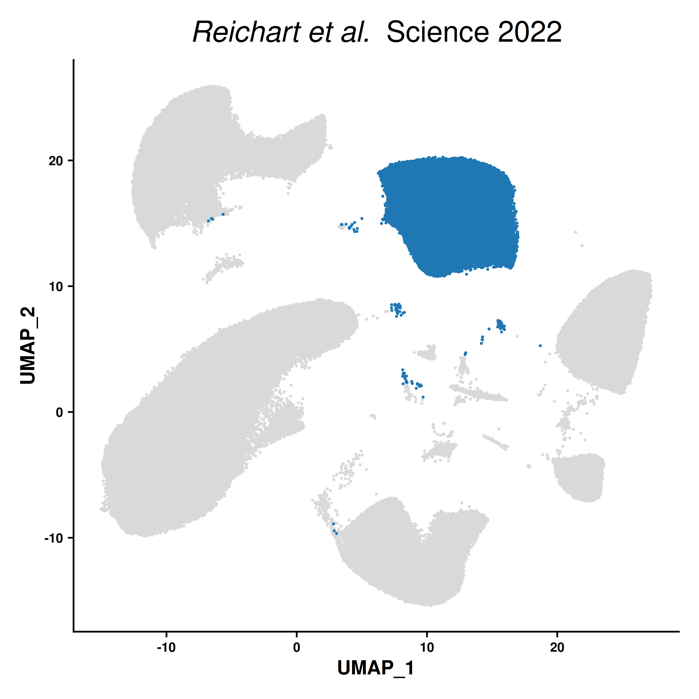
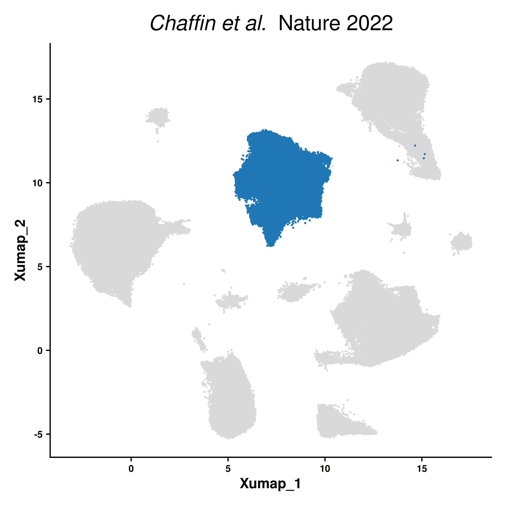
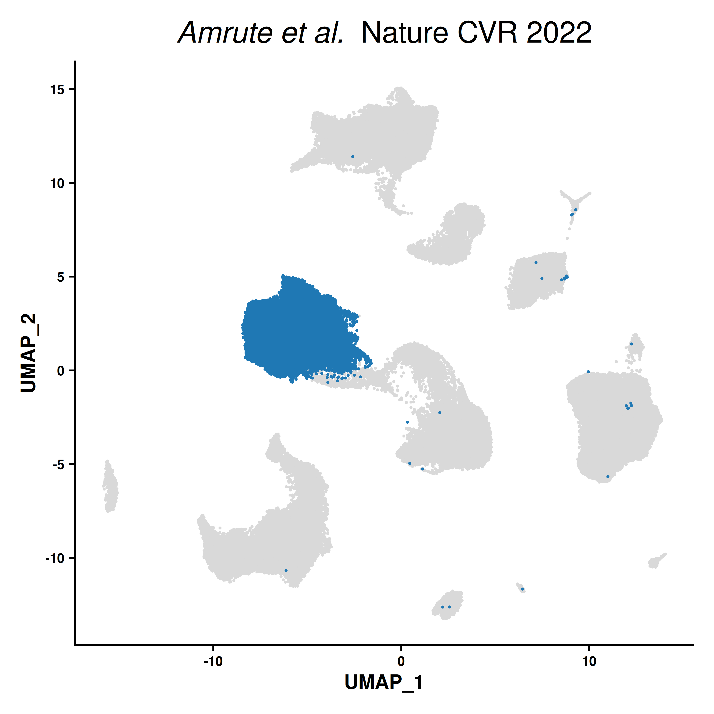
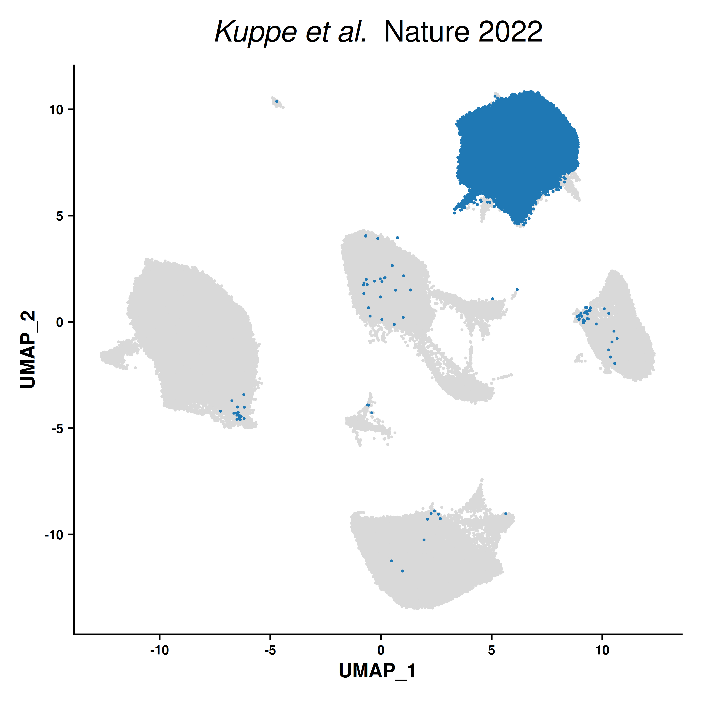

Last updated: 2026-04-23
Checks: 7 0
Knit directory: DCM_snRNAseq/
This reproducible R Markdown analysis was created with workflowr (version 1.7.2). The Checks tab describes the reproducibility checks that were applied when the results were created. The Past versions tab lists the development history.
Great! Since the R Markdown file has been committed to the Git repository, you know the exact version of the code that produced these results.
Great job! The global environment was empty. Objects defined in the global environment can affect the analysis in your R Markdown file in unknown ways. For reproduciblity it’s best to always run the code in an empty environment.
The command set.seed(20240606) was run prior to running
the code in the R Markdown file. Setting a seed ensures that any results
that rely on randomness, e.g. subsampling or permutations, are
reproducible.
Great job! Recording the operating system, R version, and package versions is critical for reproducibility.
Nice! There were no cached chunks for this analysis, so you can be confident that you successfully produced the results during this run.
Great job! Using relative paths to the files within your workflowr project makes it easier to run your code on other machines.
Great! You are using Git for version control. Tracking code development and connecting the code version to the results is critical for reproducibility.
The results in this page were generated with repository version 0fa7eac. See the Past versions tab to see a history of the changes made to the R Markdown and HTML files.
Note that you need to be careful to ensure that all relevant files for
the analysis have been committed to Git prior to generating the results
(you can use wflow_publish or
wflow_git_commit). workflowr only checks the R Markdown
file, but you know if there are other scripts or data files that it
depends on. Below is the status of the Git repository when the results
were generated:
Ignored files:
Ignored: .Rhistory
Ignored: .Rproj.user/
Ignored: output/CellChat/
Ignored: output/Cell_cell_communication_Macrophages/
Ignored: output/Chaffin_2022/
Ignored: output/Comparison_RV_bulk_RNAseq/
Ignored: output/Koenig_2022/
Ignored: output/Matrifibrocytes/
Ignored: output/SSc_PAH/
Ignored: output/Variance_partitioning/
Untracked files:
Untracked: .Rprofile
Untracked: Chaffin_wilcox.csv
Untracked: GRCh38-2020-A_build/
Untracked: Koenig_wilcox.csv
Untracked: analysis/Chaffin_2022.Rmd
Untracked: analysis/Check_IMC_panel.Rmd
Untracked: analysis/Comparison_RV_bulk_RNAseq.Rmd
Untracked: analysis/DE_Fibrosis_fibroblasts.Rmd
Untracked: analysis/DE_Group_all_cell_types.Rmd
Untracked: analysis/EC_capillary_angiogenic_boxplot_stats.csv
Untracked: analysis/Endothelial_cells_SGLT2_I.Rmd
Untracked: analysis/Fibroblasts_DA_DE_26.Rmd
Untracked: analysis/Genes_Luxembourg.Rmd
Untracked: analysis/HC_DEGs_clustering.Rmd
Untracked: analysis/Koenig_2022.Rmd
Untracked: analysis/Mass_Spec_RV_dysf.Rmd
Untracked: analysis/Mass_Spec_proteomics.Rmd
Untracked: analysis/Mass_Spec_proteomics_2.Rmd
Untracked: analysis/Mass_Spec_proteomics_3.Rmd
Untracked: analysis/Matrifibrocytes.Rmd
Untracked: analysis/Matrifibrocytes_2.Rmd
Untracked: analysis/Matrifibrocytes_integration.Rmd
Untracked: analysis/Olink_RV_dysf.Rmd
Untracked: analysis/Olink_SSc_PAH.Rmd
Untracked: analysis/Olink_SSc_PAH_draft.Rmd
Untracked: analysis/Olink_proteomics_2.Rmd
Untracked: analysis/Proteomics_combined.Rmd
Untracked: analysis/Proteomics_combined_2.Rmd
Untracked: analysis/Pseudobulk_all.csv
Untracked: analysis/Pseudobulk_all_2.csv
Untracked: analysis/Pseudobulk_byCellType_facetGrid.pdf
Untracked: analysis/Pseudobulk_byCellType_filtered_wrap3col.pdf
Untracked: analysis/Pseudobulk_byCellType_filtered_wrap3col_proportional.pdf
Untracked: analysis/Pseudobulk_byCellType_wilcox.csv
Untracked: analysis/Pseudobulk_byCellType_wilcox.filtered.csv
Untracked: analysis/Pseudobulk_byCellType_wilcox_2.csv
Untracked: analysis/QC_integration_annotation_HC.Rmd
Untracked: analysis/Reichart_ncRNA.Rmd
Untracked: analysis/Reichart_wilcox.csv
Untracked: analysis/Selection_genes_histology.Rmd
Untracked: analysis/TOM/
Untracked: analysis/UntitledR.R
Untracked: analysis/VennDiagram.2024-09-16_14-12-56.160498.log
Untracked: analysis/VennDiagram.2024-09-16_14-13-17.340014.log
Untracked: analysis/VennDiagram.2024-09-16_14-13-57.942673.log
Untracked: analysis/VennDiagram.2024-09-16_14-22-50.621507.log
Untracked: analysis/VennDiagram.2024-09-16_14-24-47.010131.log
Untracked: analysis/VennDiagram.2024-09-18_11-22-29.278827.log
Untracked: analysis/VennDiagram.2025-03-25_17-41-35.50458.log
Untracked: analysis/VennDiagram.2025-03-25_17-41-41.199096.log
Untracked: analysis/VennDiagram.2025-03-25_17-41-59.64245.log
Untracked: analysis/VennDiagram.2025-03-25_17-45-11.922474.log
Untracked: analysis/VennDiagram.2025-03-25_17-50-36.483812.log
Untracked: analysis/VennDiagram.2025-03-25_17-56-46.244322.log
Untracked: analysis/VennDiagram.2025-03-25_17-58-30.74362.log
Untracked: analysis/VennDiagram.2025-03-26_15-54-09.244636.log
Untracked: analysis/VennDiagram.2025-06-11_14-53-30.499963.log
Untracked: analysis/ec_Reichart_logCPM.csv
Untracked: analysis/omnipathr-log/
Untracked: analysis/test_1.Rmd
Untracked: code/Add_metadata.R
Untracked: code/Check DYSF.R
Untracked: code/Clustering_genes.R
Untracked: code/DE_5_percent.Rmd
Untracked: code/DE_5_percent.html
Untracked: code/DE_5_percent/
Untracked: code/DE_CM_test1.R
Untracked: code/DE_no_401.Rmd
Untracked: code/DE_no_401.html
Untracked: code/DE_no_401/
Untracked: code/Differential abundance test1.R
Untracked: code/Differential_Expression_edgeR_All.Rmd
Untracked: code/Differential_Expression_edgeR_All_2.Rmd
Untracked: code/Differential_Expression_edgeR_All_2.html
Untracked: code/Differential_Expression_edgeR_All_Age.Rmd
Untracked: code/Differential_Expression_edgeR_All_Age_2.Rmd
Untracked: code/Differential_Expression_edgeR_All_Age_2.html
Untracked: code/Differential_Expression_edgeR_All_groups.Rmd
Untracked: code/Differential_Expression_edgeR_All_groups.html
Untracked: code/Differential_Expression_edgeR_All_groups_2.Rmd
Untracked: code/Differential_Expression_edgeR_All_groups_2.html
Untracked: code/Differential_Expression_edgeR_All_groups_3.Rmd
Untracked: code/Differential_Expression_edgeR_All_groups_3.html
Untracked: code/Endothelial_cells_cubclustering_removed.Rmd
Untracked: code/PCA and CCA analysis test.R
Untracked: code/Pseudobulk DCM HC.R
Untracked: code/Published_heart_datasets_RV_vs_LV.Rmd
Untracked: code/QC_integration_annotation_orig.Rmd
Untracked: code/Removed_chunks.Rmd
Untracked: code/UpSet_plot_DEGs.Rmd
Untracked: code/Volcano_highlighted_genes.R
Untracked: code/ezInteractiveTable.Rmd
Untracked: code/ezInteractiveTable.html
Untracked: code/old.R
Untracked: data/Baza_dla_Gino_AP.xlsx
Untracked: data/Baza_dla_Gino_AP_2.xlsx
Untracked: data/Baza_dla_Gino_AP_short.xlsx
Untracked: data/Cellbender_output/
Untracked: data/Cellranger_output/
Untracked: data/DCM_Clinical_data_22.xlsx
Untracked: data/DCM_Clinical_data_26.xlsx
Untracked: data/DCM_Clinical_data_30.xlsx
Untracked: data/HMEC_RNAseq/
Untracked: data/Heart_datasets/
Untracked: data/Heart_specific_proteome.xlsx
Untracked: data/Homo_sapiens.GRCh38.93.gtf
Untracked: data/Human_plasma_proteome.xlsx
Untracked: data/Mass_spec/
Untracked: data/Massons_quantification.xlsx
Untracked: data/OLINK/
Untracked: data/OLINK_LVAD/
Untracked: data/Published_datasets/
Untracked: data/Raw/
Untracked: data/SSc-PAH/
Untracked: data/gencode.v46.chr_patch_hapl_scaff.annotation.gtf
Untracked: data/gencode.v46.chr_patch_hapl_scaff.basic.annotation.gtf
Untracked: data/refdata-gex-GRCh38-2020-A/
Untracked: omnipathr-log/
Untracked: output/Biomarkers_selection/
Untracked: output/CM_lncRNAs/
Untracked: output/Cardiomyocytes_DA_DE/
Untracked: output/Cardiomyocytes_subclustering/
Untracked: output/Cardiomyocytes_subclustering_26/
Untracked: output/Cell_cell_communication/
Untracked: output/Cell_cell_communication_LV/
Untracked: output/Cell_cell_communication_LV2/
Untracked: output/Cell_cycle/
Untracked: output/Check_IMC_panel/
Untracked: output/Comparison_LV/
Untracked: output/DA_DE_all_cell_types_and_parameters/
Untracked: output/DE_Fibrosis_all_cell_types/
Untracked: output/DE_Fibrosis_fibroblasts/
Untracked: output/DE_Group_all_cell_types/
Untracked: output/DE_all_cell_types_mPAP/
Untracked: output/DE_mPAP_all_cell_types/
Untracked: output/Differential_expression_edgeR_All/
Untracked: output/Differential_expression_edgeR_All_Age/
Untracked: output/Dysferlin/
Untracked: output/Endothelial_cells_Koenig_Reichart/
Untracked: output/Endothelial_cells_Koenig_Reichart_manuscript/
Untracked: output/Endothelial_cells_SGLT2_I/
Untracked: output/Endothelial_cells_published_datasets/
Untracked: output/Endothelial_cells_subclustering/
Untracked: output/Fibroblasts_DA_DE_26/
Untracked: output/Fibroblasts_subclustering/
Untracked: output/Figures_manuscript/
Untracked: output/Genes_Luxembourg/
Untracked: output/Genes_Luxembourg_2/
Untracked: output/HC_DEGs_clustering/
Untracked: output/HMEC/
Untracked: output/LVAD_OLINK/
Untracked: output/LV_Klaudia/
Untracked: output/LV_datasets_DCM_vs_HC/
Untracked: output/Lymphocytes_subclustering/
Untracked: output/MS_proteomics/
Untracked: output/Macrophages_subclustering/
Untracked: output/Mass_Spec_RV_dysf/
Untracked: output/Mass_Spec_proteomics/
Untracked: output/Mass_Spec_proteomics_2/
Untracked: output/Mass_Spec_proteomics_3/
Untracked: output/Matrifibrocytes_1/
Untracked: output/Matrifibrocytes_2/
Untracked: output/Matrifibrocytes_integration/
Untracked: output/Mural_cells_subclustering/
Untracked: output/Olink_RV_dysf/
Untracked: output/Olink_SSc_PAH/
Untracked: output/Olink_SSc_PAH_draft/
Untracked: output/Olink_proteomics/
Untracked: output/Olink_proteomics_2/
Untracked: output/Proteomics_combined/
Untracked: output/Proteomics_combined_2/
Untracked: output/Proteomics_combined_3/
Untracked: output/Proteomics_combined_4/
Untracked: output/Proteomics_combined_final/
Untracked: output/QC_integration_annotation/
Untracked: output/QC_integration_annotation_HC/
Untracked: output/Reichart2022_ventricle_specificity_noncoding/
Untracked: output/Reichart_DE_DCMvsHC/
Untracked: output/Selection_genes_histology/
Untracked: output/UntitledR.R
Untracked: redsfewfref.R
Untracked: reference_sources/
Untracked: renv.lock
Untracked: renv/
Unstaged changes:
Modified: analysis/CM_lncRNAs.Rmd
Modified: analysis/Cardiomyocytes_DA_DE.Rmd
Modified: analysis/Cell_cycle.Rmd
Modified: analysis/Comparison_LV.Rmd
Modified: analysis/DE_Fibrosis_all_cell_types.Rmd
Modified: analysis/DE_mPAP_all_cell_types.Rmd
Deleted: analysis/Differential_Expression_edgeR_All.Rmd
Deleted: analysis/Differential_Expression_edgeR_All_Age.Rmd
Modified: analysis/Endothelial_cells_Koenig_Reichart_manuscript.Rmd
Modified: analysis/Endothelial_cells_published_datasets.rmd
Modified: analysis/Endothelial_cells_subclustering.Rmd
Modified: analysis/Figures_manuscript.Rmd
Modified: analysis/HMEC.Rmd
Modified: analysis/LV_Klaudia.Rmd
Modified: analysis/Olink_proteomics.Rmd
Modified: analysis/Proteomics_combined_final.Rmd
Modified: analysis/Reichart_DE_DCMvsHC.Rmd
Modified: analysis/SSc_PAH.Rmd
Modified: analysis/_site.yml
Note that any generated files, e.g. HTML, png, CSS, etc., are not included in this status report because it is ok for generated content to have uncommitted changes.
These are the previous versions of the repository in which changes were
made to the R Markdown (analysis/Matrifibrocytes_1.Rmd) and
HTML (docs/Matrifibrocytes_1.html) files. If you’ve
configured a remote Git repository (see ?wflow_git_remote),
click on the hyperlinks in the table below to view the files as they
were in that past version.
| File | Version | Author | Date | Message |
|---|---|---|---|---|
| Rmd | 0fa7eac | GinoBonazza | 2026-04-23 | wflow_publish("analysis/Matrifibrocytes_1.Rmd") |
Setup
current_file <- "Matrifibrocytes_1"
library(here)
library(readxl)
library(Seurat)
library(DropletUtils)
library(Matrix)
library(scCustomize)
library(dplyr)
library(ggplot2)
library(tidyr)
library(stringr)
library(tibble)
library(patchwork)
library(edgeR)
library(limma)
library(EnhancedVolcano)
library(clusterProfiler)
library(org.Hs.eg.db)
library(enrichplot)
library(ComplexHeatmap)
library(circlize)
library(RColorBrewer)
library(ggpubr)
library(reactable)
library(scales)
library(cowplot)
library(speckle)
library(broom)
library(harmony)
library(clustree)
library(qs2)
library(decoupleR)
library(OmnipathR)
library(dorothea)
library(reticulate)
library(anndata)
output_dir_data <- here::here("output", current_file)
if (!dir.exists(output_dir_data)) dir.create(output_dir_data, recursive = TRUE)
if (!dir.exists(here::here("docs", "figure"))) dir.create(here::here("docs", "figure"), recursive = TRUE)
output_dir_figs <- here::here("docs", "figure", paste0(current_file, ".Rmd"))
if (!dir.exists(output_dir_figs)) dir.create(output_dir_figs, recursive = TRUE)
base_data_dir <- here::here("data", "Heart_datasets")Load datasets
# Koenig
load(file.path(base_data_dir, "Koenig_2022", "GSE183852_DCM_Nuclei.Robj"))
Koenig <- nuclei
rm(nuclei)
# Reichart
Reichart <- readRDS(file.path(base_data_dir, "Reichart_2022", "DCM_ACM_heart_cell_atlas.rds"))
Reichart_gene_names <- data.frame(
ensembl_id = rownames(Reichart),
gene_symbol = Reichart@assays[["RNA"]]@meta.features$feature_name
)
rownames(Reichart@assays[["RNA"]]@counts) <- Reichart@assays[["RNA"]]@meta.features$feature_name
rownames(Reichart@assays[["RNA"]]@data) <- Reichart@assays[["RNA"]]@meta.features$feature_name
# Chaffin
Chaffin <- readRDS(file.path(base_data_dir, "Chaffin_2022", "Chaffin.rds"))
Chaffin <- RenameAssays(Chaffin, originalexp = "RNA")
DefaultAssay(Chaffin) <- "RNA"
# Amrute
Amrute <- readRDS(file.path(base_data_dir, "Amrute_2023", "GSE226314_global.rds"))
# Kuppe
#Kuppe_ad <- read_h5ad(file.path(base_data_dir, "Kuppe_2022", "54d24dbe-d39a-4844-bb21-07b5f4e173ad.h5ad"))
#Kuppe <- CreateSeuratObject(
# counts = t(as.matrix(Kuppe_ad$X)),
# meta.data = Kuppe_ad$obs
#)
#
#umap <- as.matrix(Kuppe_ad$obsm[["X_umap"]])
#rownames(umap) <- colnames(Kuppe)
#colnames(umap) <- c("UMAP_1", "UMAP_2")
#Kuppe[["umap"]] <- CreateDimReducObject(
# embeddings = umap,
# key = "UMAP_",
# assay = DefaultAssay(Kuppe)
#)
#
#pca <- as.matrix(Kuppe_ad$obsm[["X_pca"]])
#rownames(pca) <- colnames(Kuppe)
#colnames(pca) <- paste0("PC_", seq_len(ncol(pca)))
#Kuppe[["pca"]] <- CreateDimReducObject(
# embeddings = pca,
# key = "PC_",
# assay = DefaultAssay(Kuppe)
#)
#
#harmony <- as.matrix(Kuppe_ad$obsm[["X_harmony"]])
#rownames(harmony) <- colnames(Kuppe)
#colnames(harmony) <- paste0("harmony_", seq_len(ncol(harmony)))
#Kuppe[["harmony"]] <- CreateDimReducObject(
# embeddings = harmony,
# key = "harmony_",
# assay = DefaultAssay(Kuppe)
#)
#
#
#kuppe_var <- Kuppe_ad$var
#kuppe_var$ensembl_id <- rownames(kuppe_var)
#
#gene_symbols <- kuppe_var$feature_name
#gene_symbols[is.na(gene_symbols) | gene_symbols == ""] <- kuppe_var$ensembl_id[is.na(gene_symbols) | gene_symbols == ""]
#
#rownames(Kuppe@assays[["RNA"]]@counts) <- gene_symbols
#rownames(Kuppe@assays[["RNA"]]@data) <- gene_symbols
#
#Kuppe@assays[["RNA"]]@meta.features <- kuppe_var
#
#rm(Kuppe_ad, pca, umap, harmony, Reichart_gene_names, kuppe_var, gene_symbols)
#qs_save(
# Kuppe,
# file = here::here(output_dir_data, "Kuppe.qs2"),
# nthreads = 32
#)
Kuppe <- qs_read(
file = here::here(output_dir_data, "Kuppe.qs2"),
nthreads = 32
)Add metadata
Koenig$Sample <- Koenig$orig.ident
Koenig$Group <- dplyr::case_when(
Koenig$Condition == "Donor" ~ "HC",
Koenig$Condition == "DCM" ~ "DCM",
TRUE ~ as.character(Koenig$Condition)
)
Koenig$cell_type <- Koenig$Names
table(Koenig$cell_type)
Fibroblasts Cardiomyocytes Lymphatic Neurons Endothelium
49124 47076 2293 1864 38029
Epicardium Mast_Cells Adipocytes Macrophages Monocytes
1401 1341 1079 29252 804
Pericytes B_Cells Endocardium Smooth_Muscle T/NK_Cells
23135 151 15941 4683 4579 Reichart$Sample <- Reichart$donor_id
Reichart$Group <- dplyr::case_when(
Reichart$disease == "normal" ~ "HC",
Reichart$disease == "dilated cardiomyopathy" ~ "DCM",
TRUE ~ as.character(Reichart$disease)
)
table(Reichart$cell_type)
mast cell endothelial cell
2113 115548
adipocyte lymphocyte
2576 16726
cardiac muscle cell myeloid cell
311418 57036
fibroblast of cardiac tissue mural cell
142816 170281
cardiac neuron unknown
9586 52981 Chaffin$Sample <- Chaffin$donor_id
Chaffin$Group <- dplyr::case_when(
Chaffin$disease == "NF" ~ "HC",
Chaffin$disease == "DCM" ~ "DCM",
TRUE ~ as.character(Chaffin$disease)
)
Chaffin$cell_type <- Chaffin$cell_type_leiden0.6
table(Chaffin$cell_type)
Activated_fibroblast Adipocyte Cardiomyocyte_I
5210 5320 149565
Cardiomyocyte_II Cardiomyocyte_III Endocardial
5447 3457 6489
Endothelial_I Endothelial_II Endothelial_III
78375 18394 4538
Epicardial Fibroblast_I Fibroblast_II
269 141725 284
Lymphatic_endothelial Lymphocyte Macrophage
5181 16246 54715
Mast_cell Neuronal Pericyte_I
4465 4292 67600
Pericyte_II Proliferating_macrophage VSMC
1704 1276 18137 Amrute$Sample <- Amrute$orig.ident
Amrute$Group <- dplyr::case_when(
Amrute$condition == "Donor" ~ "HC",
Amrute$condition == "NRpre" ~ "NICM",
Amrute$condition == "Rpre" ~ "NICM",
TRUE ~ as.character(Amrute$condition)
)
Amrute$cell_type <- Amrute$cell.type
table(Amrute$cell_type)
Adipocyte Cardiomyocyte Endocardium Endothelium Epicardium
411 30149 9506 37916 624
Fibroblast Glia Lymphatic Mast Myeloid
39051 1431 2209 769 28062
Pericyte SMC TNKCells
22738 6509 6506 Kuppe$Sample <- Kuppe$donor_id
Kuppe$Group <- dplyr::case_when(
Kuppe$disease == "normal" ~ "HC",
Kuppe$disease == "myocardial infarction" ~ "MI",
TRUE ~ as.character(Kuppe$disease)
)
Kuppe$cell_type <- Kuppe$cell_type_original
table(Kuppe$cell_type)
Adipocyte Cardiomyocyte Cycling cells Endothelial Fibroblast
523 64510 2980 32684 47309
Lymphoid Mast Myeloid Neuronal Pericyte
5064 719 21082 2436 11752
vSMCs
2736 Reichart <- subset(
Reichart,
subset = cell_type != "unknown"
)
Chaffin@reductions$umap <- Chaffin@reductions$X_umap
Chaffin@reductions$X_umap <- NULLWhole-dataset UMAPs
cell_type_cols <- c(
"#d05050", "#33A02C", "#1F78B4", "#CAB2D6", "#FF7F00", "#B2DF8A",
"#B15928", "#FFD000", "#FA95C0", "#FDBF6F", "#6A3D9A", "#7aCDF9", "#E6E600",
"#8DD3C7", "#FB8072", "#80B1D3", "#BC80BD", "#CCEBC5", "#FFED6F",
"#A6CEE3", "#F781BF"
)
koenig_levels <- sort(unique(as.character(Koenig$cell_type)))
koenig_cols <- setNames(rep(cell_type_cols, length.out = length(koenig_levels)), koenig_levels)
reichart_levels <- sort(unique(as.character(Reichart$cell_type)))
reichart_cols <- setNames(rep(cell_type_cols, length.out = length(reichart_levels)), reichart_levels)
chaffin_levels <- sort(unique(as.character(Chaffin$cell_type)))
chaffin_cols <- setNames(rep(cell_type_cols, length.out = length(chaffin_levels)), chaffin_levels)
amrute_levels <- sort(unique(as.character(Amrute$cell_type)))
amrute_cols <- setNames(rep(cell_type_cols, length.out = length(amrute_levels)), amrute_levels)
kuppe_levels <- sort(unique(as.character(Kuppe$cell_type)))
kuppe_cols <- setNames(rep(cell_type_cols, length.out = length(kuppe_levels)), kuppe_levels)
#Koenig
p_koenig <- DimPlot(
Koenig,
group.by = "cell_type",
reduction = "umap",
cols = koenig_cols,
label = FALSE,
shuffle = TRUE,
pt.size = 1.2
) +
NoLegend() +
ggtitle(expression(atop(italic("Koenig et al.") ~ " Nature CVR 2022",
"HC & DCM - LV")
)) +
theme(
axis.text = element_text(size = 8, face = "bold"),
axis.title = element_text(size = 12, face = "bold"),
plot.title = element_text(size = 18, face = "bold", hjust = 0.5)
)
p_koenig <- LabelClusters(
p_koenig,
id = "cell_type",
fontface = "bold",
size = 5.2,
repel = TRUE
)
#Reichart
p_reichart <- DimPlot(
Reichart,
group.by = "cell_type",
reduction = "umap",
cols = reichart_cols,
label = FALSE,
shuffle = TRUE,
pt.size = 1.2
) +
NoLegend() +
ggtitle(expression(atop(italic("Reichart et al.") ~ " Science 2022",
"HC & DCM - LV")
)) +
theme(
axis.text = element_text(size = 8, face = "bold"),
axis.title = element_text(size = 12, face = "bold"),
plot.title = element_text(size = 18, face = "bold", hjust = 0.5)
)
p_reichart <- LabelClusters(
p_reichart,
id = "cell_type",
fontface = "bold",
size = 5.2,
repel = TRUE
)
#Chaffin
p_chaffin <- DimPlot(
Chaffin,
group.by = "cell_type",
reduction = "umap",
cols = chaffin_cols,
label = FALSE,
shuffle = TRUE,
pt.size = 1.2
) +
NoLegend() +
ggtitle(expression(atop(italic("Chaffin et al.") ~ " Nature 2022",
"HC & DCM - LV")
)) +
theme(
axis.text = element_text(size = 8, face = "bold"),
axis.title = element_text(size = 12, face = "bold"),
plot.title = element_text(size = 18, face = "bold", hjust = 0.5)
)
p_chaffin <- LabelClusters(
p_chaffin,
id = "cell_type",
fontface = "bold",
size = 5.2,
repel = TRUE
)
#Amrute
p_amrute <- DimPlot(
Amrute,
group.by = "cell_type",
reduction = "umap",
cols = amrute_cols,
label = FALSE,
shuffle = TRUE,
pt.size = 1.2
) +
NoLegend() +
ggtitle(expression(atop(italic("Amrute et al.") ~ " Nature CVR 2022",
"HC & NICM - Apex")
)) +
theme(
axis.text = element_text(size = 8, face = "bold"),
axis.title = element_text(size = 12, face = "bold"),
plot.title = element_text(size = 18, face = "bold", hjust = 0.5)
)
p_amrute <- LabelClusters(
p_amrute,
id = "cell_type",
fontface = "bold",
size = 5.2,
repel = TRUE
)
#Kuppe
p_kuppe <- DimPlot(
Kuppe,
group.by = "cell_type",
reduction = "umap",
cols = kuppe_cols,
label = FALSE,
shuffle = TRUE,
pt.size = 1.2
) +
NoLegend() +
ggtitle(expression(atop(italic("Kuppe et al.") ~ " Nature 2022",
"HC & MI - LV")
)) +
theme(
axis.text = element_text(size = 8, face = "bold"),
axis.title = element_text(size = 12, face = "bold"),
plot.title = element_text(size = 18, face = "bold", hjust = 0.5)
)
p_kuppe <- LabelClusters(
p_kuppe,
id = "cell_type",
fontface = "bold",
size = 5.2,
repel = TRUE
)
p_koenig
p_reichart
p_chaffin
p_amrute
p_kuppe
Reichart <- subset(
Reichart,
disease %in% c("normal", "dilated cardiomyopathy") & tissue == "heart left ventricle"
)
Chaffin <- subset(
Chaffin,
disease %in% c("NF", "DCM")
)
Amrute <- subset(
Amrute,
condition %in% c("Donor", "NRpre", "Rpre")
)
Koenig$Dataset <- "Koenig"
Reichart$Dataset <- "Reichart"
Chaffin$Dataset <- "Chaffin"
Amrute$Dataset <- "Amrute"
Kuppe$Dataset <- "Kuppe"goi <- c("COMP", "CILP", "CHAD", "THBS4")koenig_fb_cells <- rownames(Koenig@meta.data)[Koenig$cell_type %in% c("Fibroblasts")]
reichart_fb_cells <- rownames(Reichart@meta.data)[Reichart$cell_type %in% c("fibroblast of cardiac tissue")]
chaffin_fb_cells <- rownames(Chaffin@meta.data)[Chaffin$cell_type %in% c("Activated_fibroblast", "Fibroblast_I", "Fibroblast_II")]
amrute_fb_cells <- rownames(Amrute@meta.data)[Amrute$cell_type %in% c("Fibroblast")]
kuppe_fb_cells <- rownames(Kuppe@meta.data)[Kuppe$cell_type %in% c("Fibroblast")]
p_koenig_fb <- DimPlot(
Koenig,
reduction = "umap",
cells.highlight = koenig_fb_cells,
cols.highlight = "#1F78B4",
cols = "grey85",
sizes.highlight = 0.01,
shuffle = TRUE,
pt.size = 0.01,
raster = FALSE
) +
NoLegend() +
ggtitle(expression(italic("Koenig et al.") ~ " Nature CVR 2022")) +
theme(
axis.text = element_text(size = 8, face = "bold"),
axis.title = element_text(size = 12, face = "bold"),
plot.title = element_text(size = 18, face = "bold", hjust = 0.5),
legend.position = "none"
)
p_reichart_fb <- DimPlot(
Reichart,
reduction = "umap",
cells.highlight = reichart_fb_cells,
cols.highlight = "#1F78B4",
cols = "grey85",
sizes.highlight = 0.01,
shuffle = TRUE,
pt.size = 0.01,
raster = FALSE
) +
NoLegend() +
ggtitle(expression(italic("Reichart et al.") ~ " Science 2022")) +
theme(
axis.text = element_text(size = 8, face = "bold"),
axis.title = element_text(size = 12, face = "bold"),
plot.title = element_text(size = 18, face = "bold", hjust = 0.5),
legend.position = "none"
)
p_chaffin_fb <- DimPlot(
Chaffin,
reduction = "umap",
cells.highlight = chaffin_fb_cells,
cols.highlight = "#1F78B4",
cols = "grey85",
sizes.highlight = 0.01,
shuffle = TRUE,
pt.size = 0.01,
raster = FALSE
) +
NoLegend() +
ggtitle(expression(italic("Chaffin et al.") ~ " Nature 2022")) +
theme(
axis.text = element_text(size = 8, face = "bold"),
axis.title = element_text(size = 12, face = "bold"),
plot.title = element_text(size = 18, face = "bold", hjust = 0.5),
legend.position = "none"
)
p_amrute_fb <- DimPlot(
Amrute,
reduction = "umap",
cells.highlight = amrute_fb_cells,
cols.highlight = "#1F78B4",
cols = "grey85",
sizes.highlight = 0.01,
shuffle = TRUE,
pt.size = 0.01,
raster = FALSE
) +
NoLegend() +
ggtitle(expression(italic("Amrute et al.") ~ " Nature CVR 2022")) +
theme(
axis.text = element_text(size = 8, face = "bold"),
axis.title = element_text(size = 12, face = "bold"),
plot.title = element_text(size = 18, face = "bold", hjust = 0.5),
legend.position = "none"
)
p_kuppe_fb <- DimPlot(
Kuppe,
reduction = "umap",
cells.highlight = kuppe_fb_cells,
cols.highlight = "#1F78B4",
cols = "grey85",
sizes.highlight = 0.01,
shuffle = TRUE,
pt.size = 0.01,
raster = FALSE
) +
NoLegend() +
ggtitle(expression(italic("Kuppe et al.") ~ " Nature 2022")) +
theme(
axis.text = element_text(size = 8, face = "bold"),
axis.title = element_text(size = 12, face = "bold"),
plot.title = element_text(size = 18, face = "bold", hjust = 0.5),
legend.position = "none"
)
p_koenig_fb 
p_reichart_fb
p_chaffin_fb
p_amrute_fb
p_kuppe_fb
goi <- c("COMP", "CILP", "CHAD", "THBS4")
dataset_list <- list(
Koenig = list(
obj = Koenig,
title = expression(atop(italic("Koenig et al.") ~ " Nature CVR 2022",
"HC & DCM - LV"))
),
Reichart = list(
obj = Reichart,
title = expression(atop(italic("Reichart et al.") ~ " Science 2022",
"HC & DCM - LV"))
),
Chaffin = list(
obj = Chaffin,
title = expression(atop(italic("Chaffin et al.") ~ " Nature 2022",
"HC & DCM - LV"))
),
Amrute = list(
obj = Amrute,
title = expression(atop(italic("Amrute et al.") ~ " Nature CVR 2022",
"HC & NICM - Apex"))
),
Kuppe = list(
obj = Kuppe,
title = expression(atop(italic("Kuppe et al.") ~ " Nature 2022",
"HC & MI - LV"))
)
)
for (nm in names(dataset_list)) {
obj <- dataset_list[[nm]]$obj
DefaultAssay(obj) <- "RNA"
genes_present <- goi[goi %in% rownames(obj)]
if (length(genes_present) == 0) {
message("None of the genes found in ", nm)
next
}
p <- FeaturePlot(
obj,
features = genes_present,
reduction = "umap",
order = FALSE,
cols = c("grey90", "#A63A2A"),
pt.size = 0.15,
combine = TRUE,
ncol = 4,
raster = FALSE
) &
theme(
axis.text = element_text(size = 8, face = "bold"),
axis.title = element_text(size = 12, face = "bold"),
plot.title = element_text(size = 16, face = "bold", hjust = 0.5)
)
p <- p + patchwork::plot_annotation(
title = dataset_list[[nm]]$title,
theme = theme(
plot.title = element_text(size = 18, face = "bold", hjust = 0.5)
)
)
print(p)
if (length(genes_present) < length(goi)) {
message(
nm, " - missing genes: ",
paste(setdiff(goi, genes_present), collapse = ", ")
)
}
}


goi <- c("COMP", "CILP", "CHAD", "THBS4")
dataset_list <- list(
Koenig = list(
obj = Koenig,
title = expression(atop(italic("Koenig et al.") ~ " Nature CVR 2022",
"HC & DCM - LV"))
),
Reichart = list(
obj = Reichart,
title = expression(atop(italic("Reichart et al.") ~ " Science 2022",
"HC & DCM - LV"))
),
Chaffin = list(
obj = Chaffin,
title = expression(atop(italic("Chaffin et al.") ~ " Nature 2022",
"HC & DCM - LV"))
),
Amrute = list(
obj = Amrute,
title = expression(atop(italic("Amrute et al.") ~ " Nature CVR 2022",
"HC & NICM - Apex"))
),
Kuppe = list(
obj = Kuppe,
title = expression(atop(italic("Kuppe et al.") ~ " Nature 2022",
"HC & MI - LV"))
)
)
for (nm in names(dataset_list)) {
obj <- dataset_list[[nm]]$obj
DefaultAssay(obj) <- "RNA"
genes_present <- goi[goi %in% rownames(obj)]
if (length(genes_present) == 0) {
message("None of the genes found in ", nm)
next
}
p <- FeaturePlot(
obj,
features = genes_present,
reduction = "umap",
order = TRUE,
cols = c("grey90", "#A63A2A"),
pt.size = 0.15,
combine = TRUE,
ncol = 4,
raster = FALSE
) &
theme(
axis.text = element_text(size = 8, face = "bold"),
axis.title = element_text(size = 12, face = "bold"),
plot.title = element_text(size = 16, face = "bold", hjust = 0.5)
)
p <- p + patchwork::plot_annotation(
title = dataset_list[[nm]]$title,
theme = theme(
plot.title = element_text(size = 18, face = "bold", hjust = 0.5)
)
)
print(p)
if (length(genes_present) < length(goi)) {
message(
nm, " - missing genes: ",
paste(setdiff(goi, genes_present), collapse = ", ")
)
}
}


koenig_fb <- subset(Koenig, cell_type %in% c("Fibroblasts"))
reichart_fb <- subset(Reichart, cell_type %in% c("fibroblast of cardiac tissue"))
chaffin_fb <- subset(Chaffin, cell_type %in% c("Activated_fibroblast", "Fibroblast_I", "Fibroblast_II"))
amrute_fb <- subset(Amrute, cell_type %in% c("Fibroblast"))
kuppe_fb <- subset(Kuppe, cell_type %in% c("Fibroblast"))goi <- c("COMP", "CILP", "CHAD", "THBS4")
dataset_list <- list(
Koenig = list(
obj = koenig_fb,
title = expression(atop(italic("Koenig et al.") ~ " Nature CVR 2022",
"HC & DCM - LV"))
),
Reichart = list(
obj = reichart_fb,
title = expression(atop(italic("Reichart et al.") ~ " Science 2022",
"HC & DCM - LV"))
),
Chaffin = list(
obj = chaffin_fb,
title = expression(atop(italic("Chaffin et al.") ~ " Nature 2022",
"HC & DCM - LV"))
),
Amrute = list(
obj = amrute_fb,
title = expression(atop(italic("Amrute et al.") ~ " Nature CVR 2022",
"HC & NICM - Apex"))
),
Kuppe = list(
obj = kuppe_fb,
title = expression(atop(italic("Kuppe et al.") ~ " Nature 2022",
"HC & MI - LV"))
)
)
for (nm in names(dataset_list)) {
obj <- dataset_list[[nm]]$obj
DefaultAssay(obj) <- "RNA"
genes_present <- goi[goi %in% rownames(obj)]
if (length(genes_present) == 0) {
message("None of the genes found in ", nm)
next
}
p <- FeaturePlot(
obj,
features = genes_present,
reduction = "umap",
order = FALSE,
cols = c("grey90", "#A63A2A"),
pt.size = 0.15,
combine = TRUE,
ncol = 4,
raster = FALSE
) &
theme(
axis.text = element_text(size = 8, face = "bold"),
axis.title = element_text(size = 12, face = "bold"),
plot.title = element_text(size = 16, face = "bold", hjust = 0.5)
)
p <- p + patchwork::plot_annotation(
title = dataset_list[[nm]]$title,
theme = theme(
plot.title = element_text(size = 18, face = "bold", hjust = 0.5)
)
)
print(p)
if (length(genes_present) < length(goi)) {
message(
nm, " - missing genes: ",
paste(setdiff(goi, genes_present), collapse = ", ")
)
}
}


goi <- c("COMP", "CILP", "CHAD", "THBS4")
dataset_list <- list(
Koenig = list(
obj = koenig_fb,
title = expression(atop(italic("Koenig et al.") ~ " Nature CVR 2022",
"HC & DCM - LV"))
),
Reichart = list(
obj = reichart_fb,
title = expression(atop(italic("Reichart et al.") ~ " Science 2022",
"HC & DCM - LV"))
),
Chaffin = list(
obj = chaffin_fb,
title = expression(atop(italic("Chaffin et al.") ~ " Nature 2022",
"HC & DCM - LV"))
),
Amrute = list(
obj = amrute_fb,
title = expression(atop(italic("Amrute et al.") ~ " Nature CVR 2022",
"HC & NICM - Apex"))
),
Kuppe = list(
obj = kuppe_fb,
title = expression(atop(italic("Kuppe et al.") ~ " Nature 2022",
"HC & MI - LV"))
)
)
for (nm in names(dataset_list)) {
obj <- dataset_list[[nm]]$obj
DefaultAssay(obj) <- "RNA"
genes_present <- goi[goi %in% rownames(obj)]
if (length(genes_present) == 0) {
message("None of the genes found in ", nm)
next
}
p <- FeaturePlot(
obj,
features = genes_present,
reduction = "umap",
order = TRUE,
cols = c("grey90", "#A63A2A"),
pt.size = 0.15,
combine = TRUE,
ncol = 4,
raster = FALSE
) &
theme(
axis.text = element_text(size = 8, face = "bold"),
axis.title = element_text(size = 12, face = "bold"),
plot.title = element_text(size = 16, face = "bold", hjust = 0.5)
)
p <- p + patchwork::plot_annotation(
title = dataset_list[[nm]]$title,
theme = theme(
plot.title = element_text(size = 18, face = "bold", hjust = 0.5)
)
)
print(p)
if (length(genes_present) < length(goi)) {
message(
nm, " - missing genes: ",
paste(setdiff(goi, genes_present), collapse = ", ")
)
}
}


goi <- c("COMP", "CILP", "CHAD", "THBS4", "SFRP2", "ITGBL1", "CFH")
dataset_list <- list(
Koenig = list(
obj = koenig_fb,
title = expression(atop(italic("Koenig et al.") ~ " Nature CVR 2022",
"HC & DCM - LV"))
),
Reichart = list(
obj = reichart_fb,
title = expression(atop(italic("Reichart et al.") ~ " Science 2022",
"HC & DCM - LV"))
),
Chaffin = list(
obj = chaffin_fb,
title = expression(atop(italic("Chaffin et al.") ~ " Nature 2022",
"HC & DCM - LV"))
),
Amrute = list(
obj = amrute_fb,
title = expression(atop(italic("Amrute et al.") ~ " Nature CVR 2022",
"HC & NICM - Apex"))
),
Kuppe = list(
obj = kuppe_fb,
title = expression(atop(italic("Kuppe et al.") ~ " Nature 2022",
"HC & MI - LV"))
)
)
for (nm in names(dataset_list)) {
obj <- dataset_list[[nm]]$obj
DefaultAssay(obj) <- "RNA"
genes_present <- goi[goi %in% rownames(obj)]
if (length(genes_present) == 0) {
message("None of the genes found in ", nm)
next
}
p <- FeaturePlot(
obj,
features = genes_present,
reduction = "umap",
order = TRUE,
cols = c("grey90", "#A63A2A"),
pt.size = 0.15,
combine = TRUE,
ncol = 7,
raster = FALSE
) &
theme(
axis.text = element_text(size = 8, face = "bold"),
axis.title = element_text(size = 12, face = "bold"),
plot.title = element_text(size = 16, face = "bold", hjust = 0.5)
)
p <- p + patchwork::plot_annotation(
title = dataset_list[[nm]]$title,
theme = theme(
plot.title = element_text(size = 18, face = "bold", hjust = 0.5)
)
)
print(p)
if (length(genes_present) < length(goi)) {
message(
nm, " - missing genes: ",
paste(setdiff(goi, genes_present), collapse = ", ")
)
}
}


DefaultAssay(koenig_fb) <- "RNA"
koenig_fb <- NormalizeData(koenig_fb)
DefaultAssay(chaffin_fb) <- "RNA"
chaffin_fb <- NormalizeData(chaffin_fb)
DefaultAssay(reichart_fb) <- "RNA"
DefaultAssay(amrute_fb) <- "RNA"
DefaultAssay(kuppe_fb) <- "RNA"fb_list <- list(
koenig_fb = koenig_fb,
reichart_fb = reichart_fb,
chaffin_fb = chaffin_fb,
amrute_fb = amrute_fb,
kuppe_fb = kuppe_fb
)
for (nm in names(fb_list)) {
obj <- fb_list[[nm]]
DefaultAssay(obj) <- "RNA"
genes_present <- goi[goi %in% rownames(obj)]
if (length(genes_present) == 0) {
message("No GOI found in ", nm)
next
}
message(nm, ": using ", length(genes_present), " genes -> ", paste(genes_present, collapse = ", "))
obj <- AddModuleScore(
object = obj,
features = list(genes_present),
name = "Matrifibrocyte_score",
assay = "RNA",
slot = "data",
ctrl = 25,
nbin = 24,
seed = 1
)
obj$Matrifibrocyte_score <- obj$Matrifibrocyte_score1
obj$Matrifibrocyte_score1 <- NULL
fb_list[[nm]] <- obj
}
koenig_fb <- fb_list$koenig_fb
reichart_fb <- fb_list$reichart_fb
chaffin_fb <- fb_list$chaffin_fb
amrute_fb <- fb_list$amrute_fb
kuppe_fb <- fb_list$kuppe_fb
rm(fb_list)score_name <- "Matrifibrocyte_score"
dataset_list <- list(
Koenig = list(
obj = koenig_fb,
title = expression(atop(italic("Koenig et al.") ~ " Nature CVR 2022",
"HC & DCM - LV"))
),
Reichart = list(
obj = reichart_fb,
title = expression(atop(italic("Reichart et al.") ~ " Science 2022",
"HC & DCM - LV"))
),
Chaffin = list(
obj = chaffin_fb,
title = expression(atop(italic("Chaffin et al.") ~ " Nature 2022",
"HC & DCM - LV"))
),
Amrute = list(
obj = amrute_fb,
title = expression(atop(italic("Amrute et al.") ~ " Nature CVR 2022",
"HC & NICM - Apex"))
),
Kuppe = list(
obj = kuppe_fb,
title = expression(atop(italic("Kuppe et al.") ~ " Nature 2022",
"HC & MI - LV"))
)
)
p_list <- list()
for (nm in names(dataset_list)) {
obj <- dataset_list[[nm]]$obj
if (!score_name %in% colnames(obj@meta.data)) {
message(score_name, " not found in ", nm)
next
}
p <- FeaturePlot(
obj,
features = score_name,
reduction = "umap",
order = TRUE,
cols = c("grey90", "#A63A2A"),
pt.size = 0.15,
combine = TRUE,
raster = FALSE
) +
ggtitle(dataset_list[[nm]]$title) +
theme(
axis.text = element_text(size = 8, face = "bold"),
axis.title = element_text(size = 12, face = "bold"),
plot.title = element_text(size = 16, face = "bold", hjust = 0.5)
)
p_list[[nm]] <- p
}
wrap_plots(p_list, ncol = 5) +
plot_annotation(
title = score_name,
theme = theme(
plot.title = element_text(size = 20, face = "bold", hjust = 0.5)
)
)
score_name <- "Matrifibrocyte_score"
dataset_list <- list(
Koenig = list(
obj = koenig_fb,
title = expression(atop(italic("Koenig et al.") ~ " Nature CVR 2022",
"HC & DCM - LV"))
),
Reichart = list(
obj = reichart_fb,
title = expression(atop(italic("Reichart et al.") ~ " Science 2022",
"HC & DCM - LV"))
),
Chaffin = list(
obj = chaffin_fb,
title = expression(atop(italic("Chaffin et al.") ~ " Nature 2022",
"HC & DCM - LV"))
),
Amrute = list(
obj = amrute_fb,
title = expression(atop(italic("Amrute et al.") ~ " Nature CVR 2022",
"HC & NICM - Apex"))
),
Kuppe = list(
obj = kuppe_fb,
title = expression(atop(italic("Kuppe et al.") ~ " Nature 2022",
"HC & MI - LV"))
)
)
p_list <- list()
for (nm in names(dataset_list)) {
obj <- dataset_list[[nm]]$obj
if (!score_name %in% colnames(obj@meta.data)) {
message(score_name, " not found in ", nm)
next
}
p <- FeaturePlot(
obj,
features = score_name,
reduction = "umap",
order = FALSE,
cols = c("grey90", "#A63A2A"),
pt.size = 0.15,
combine = TRUE,
raster = FALSE
) +
ggtitle(dataset_list[[nm]]$title) +
theme(
axis.text = element_text(size = 8, face = "bold"),
axis.title = element_text(size = 12, face = "bold"),
plot.title = element_text(size = 16, face = "bold", hjust = 0.5)
)
p_list[[nm]] <- p
}
wrap_plots(p_list, ncol = 5) +
plot_annotation(
title = score_name,
theme = theme(
plot.title = element_text(size = 20, face = "bold", hjust = 0.5)
)
)
qs_save(
koenig_fb,
file = here::here(output_dir_data, "koenig_fb.qs2"),
nthreads = 32
)
qs_save(
chaffin_fb,
file = here::here(output_dir_data, "chaffin_fb.qs2"),
nthreads = 32
)
qs_save(
reichart_fb,
file = here::here(output_dir_data, "reichart_fb.qs2"),
nthreads = 32
)
qs_save(
amrute_fb,
file = here::here(output_dir_data, "amrute_fb.qs2"),
nthreads = 32
)
qs_save(
kuppe_fb,
file = here::here(output_dir_data, "kuppe_fb.qs2"),
nthreads = 32
)
sessionInfo()R version 4.5.2 (2025-10-31)
Platform: x86_64-pc-linux-gnu
Running under: Ubuntu 24.04.3 LTS
Matrix products: default
BLAS: /usr/lib/x86_64-linux-gnu/openblas-pthread/libblas.so.3
LAPACK: /usr/lib/x86_64-linux-gnu/openblas-pthread/libopenblasp-r0.3.26.so; LAPACK version 3.12.0
locale:
[1] LC_CTYPE=en_US.UTF-8 LC_NUMERIC=C
[3] LC_TIME=en_US.UTF-8 LC_COLLATE=en_US.UTF-8
[5] LC_MONETARY=en_US.UTF-8 LC_MESSAGES=en_US.UTF-8
[7] LC_PAPER=en_US.UTF-8 LC_NAME=C
[9] LC_ADDRESS=C LC_TELEPHONE=C
[11] LC_MEASUREMENT=en_US.UTF-8 LC_IDENTIFICATION=C
time zone: Etc/UTC
tzcode source: system (glibc)
attached base packages:
[1] grid stats4 stats graphics grDevices datasets utils
[8] methods base
other attached packages:
[1] anndata_0.8.0 reticulate_1.44.1
[3] dorothea_1.22.0 OmnipathR_3.18.2
[5] decoupleR_2.16.0 qs2_0.1.7
[7] clustree_0.5.1 ggraph_2.2.2
[9] harmony_1.2.4 Rcpp_1.1.0
[11] broom_1.0.11 speckle_1.10.0
[13] cowplot_1.2.0 scales_1.4.0
[15] reactable_0.4.5 ggpubr_0.6.2
[17] RColorBrewer_1.1-3 circlize_0.4.16
[19] ComplexHeatmap_2.26.0 enrichplot_1.30.4
[21] org.Hs.eg.db_3.22.0 AnnotationDbi_1.72.0
[23] clusterProfiler_4.18.2 EnhancedVolcano_1.29.1
[25] ggrepel_0.9.6 edgeR_4.8.0
[27] limma_3.66.0 patchwork_1.3.2
[29] tibble_3.3.0 stringr_1.6.0
[31] tidyr_1.3.1 ggplot2_4.0.1
[33] dplyr_1.1.4 scCustomize_3.2.2
[35] Matrix_1.6-5 DropletUtils_1.30.0
[37] SingleCellExperiment_1.32.0 SummarizedExperiment_1.40.0
[39] Biobase_2.70.0 GenomicRanges_1.62.0
[41] Seqinfo_1.0.0 IRanges_2.44.0
[43] S4Vectors_0.48.0 BiocGenerics_0.56.0
[45] generics_0.1.4 MatrixGenerics_1.22.0
[47] matrixStats_1.5.0 SeuratObject_5.0.2
[49] Seurat_4.4.0 readxl_1.4.5
[51] here_1.0.2
loaded via a namespace (and not attached):
[1] R.methodsS3_1.8.2 progress_1.2.3
[3] goftest_1.2-3 Biostrings_2.78.0
[5] HDF5Array_1.38.0 vctrs_0.6.5
[7] ggtangle_0.0.9 spatstat.random_3.4-3
[9] digest_0.6.39 png_0.1-8
[11] shape_1.4.6.1 git2r_0.36.2
[13] deldir_2.0-4 parallelly_1.45.1
[15] bcellViper_1.46.0 renv_1.1.5
[17] MASS_7.3-65 fontLiberation_0.1.0
[19] reshape2_1.4.5 httpuv_1.6.16
[21] foreach_1.5.2 qvalue_2.42.0
[23] withr_3.0.2 ggrastr_1.0.2
[25] xfun_0.56 ggfun_0.2.0
[27] survival_3.8-3 memoise_2.0.1
[29] ggbeeswarm_0.7.3 janitor_2.2.1
[31] gson_0.1.0 systemfonts_1.3.1
[33] tidytree_0.4.6 zoo_1.8-14
[35] GlobalOptions_0.1.3 pbapply_1.7-4
[37] R.oo_1.27.1 prettyunits_1.2.0
[39] Formula_1.2-5 rematch2_2.1.2
[41] KEGGREST_1.50.0 promises_1.5.0
[43] otel_0.2.0 httr_1.4.7
[45] rstatix_0.7.3 globals_0.18.0
[47] fitdistrplus_1.2-4 rhdf5filters_1.22.0
[49] stringfish_0.18.0 rhdf5_2.54.0
[51] rstudioapi_0.17.1 miniUI_0.1.2
[53] DOSE_4.4.0 curl_7.0.0
[55] h5mread_1.2.1 polyclip_1.10-7
[57] SparseArray_1.10.4 xtable_1.8-4
[59] doParallel_1.0.17 evaluate_1.0.5
[61] S4Arrays_1.10.1 hms_1.1.4
[63] irlba_2.3.5.1 colorspace_2.1-2
[65] ROCR_1.0-11 spatstat.data_3.1-9
[67] readr_2.1.6 magrittr_2.0.4
[69] lmtest_0.9-40 snakecase_0.11.1
[71] viridis_0.6.5 later_1.4.4
[73] ggtree_4.0.1 lattice_0.22-7
[75] spatstat.geom_3.6-1 future.apply_1.20.0
[77] XML_3.99-0.20 scattermore_1.2
[79] scuttle_1.20.0 RcppAnnoy_0.0.22
[81] pillar_1.11.1 nlme_3.1-168
[83] iterators_1.0.14 compiler_4.5.2
[85] beachmat_2.26.0 stringi_1.8.7
[87] tensor_1.5.1 lubridate_1.9.4
[89] plyr_1.8.9 crayon_1.5.3
[91] abind_1.4-8 gridGraphics_0.5-1
[93] locfit_1.5-9.12 sp_2.2-0
[95] graphlayouts_1.2.2 bit_4.6.0
[97] fastmatch_1.1-6 whisker_0.4.1
[99] codetools_0.2-20 bslib_0.9.0
[101] paletteer_1.6.0 GetoptLong_1.1.0
[103] plotly_4.11.0 mime_0.13
[105] splines_4.5.2 tidydr_0.0.6
[107] sparseMatrixStats_1.22.0 cellranger_1.1.0
[109] knitr_1.50 blob_1.2.4
[111] clue_0.3-66 fs_1.6.6
[113] checkmate_2.3.3 listenv_0.10.0
[115] DelayedMatrixStats_1.32.0 logger_0.4.1
[117] ggsignif_0.6.4 ggplotify_0.1.3
[119] statmod_1.5.1 tzdb_0.5.0
[121] tweenr_2.0.3 pkgconfig_2.0.3
[123] tools_4.5.2 cachem_1.1.0
[125] RSQLite_2.4.5 rvest_1.0.5
[127] viridisLite_0.4.2 DBI_1.2.3
[129] fastmap_1.2.0 rmarkdown_2.30
[131] ica_1.0-3 sass_0.4.10
[133] ggprism_1.0.7 BiocManager_1.30.27
[135] dotCall64_1.2 carData_3.0-5
[137] RANN_2.6.2 farver_2.1.2
[139] tidygraph_1.3.1 scatterpie_0.2.6
[141] yaml_2.3.11 workflowr_1.7.2
[143] cli_3.6.5 purrr_1.2.0
[145] leiden_0.4.3.1 lifecycle_1.0.4
[147] uwot_0.2.4 sessioninfo_1.2.3
[149] backports_1.5.0 BiocParallel_1.44.0
[151] timechange_0.3.0 gtable_0.3.6
[153] rjson_0.2.23 ggridges_0.5.7
[155] progressr_0.18.0 parallel_4.5.2
[157] ape_5.8-1 jsonlite_2.0.0
[159] assertthat_0.2.1 bit64_4.6.0-1
[161] Rtsne_0.17 yulab.utils_0.2.2
[163] spatstat.utils_3.2-0 zip_2.3.3
[165] RcppParallel_5.1.11-1 jquerylib_0.1.4
[167] GOSemSim_2.36.0 dqrng_0.4.1
[169] spatstat.univar_3.1-5 R.utils_2.13.0
[171] lazyeval_0.2.2 shiny_1.12.0
[173] htmltools_0.5.9 GO.db_3.22.0
[175] sctransform_0.4.2 rappdirs_0.3.3
[177] glue_1.8.0 tcltk_4.5.2
[179] spam_2.11-1 httr2_1.2.1
[181] XVector_0.50.0 gdtools_0.4.4
[183] rprojroot_2.1.1 treeio_1.34.0
[185] gridExtra_2.3 igraph_2.2.1
[187] R6_2.6.1 ggiraph_0.9.2
[189] labeling_0.4.3 forcats_1.0.1
[191] cluster_2.1.8.1 Rhdf5lib_1.32.0
[193] aplot_0.2.9 DelayedArray_0.36.0
[195] tidyselect_1.2.1 vipor_0.4.7
[197] xml2_1.5.1 ggforce_0.5.0
[199] fontBitstreamVera_0.1.1 car_3.1-3
[201] future_1.68.0 KernSmooth_2.23-26
[203] S7_0.2.1 fontquiver_0.2.1
[205] data.table_1.17.8 htmlwidgets_1.6.4
[207] fgsea_1.36.0 rlang_1.1.6
[209] spatstat.sparse_3.1-0 spatstat.explore_3.6-0
[211] ggnewscale_0.5.2 beeswarm_0.4.0